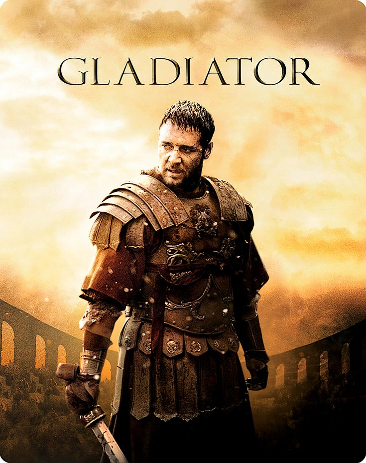
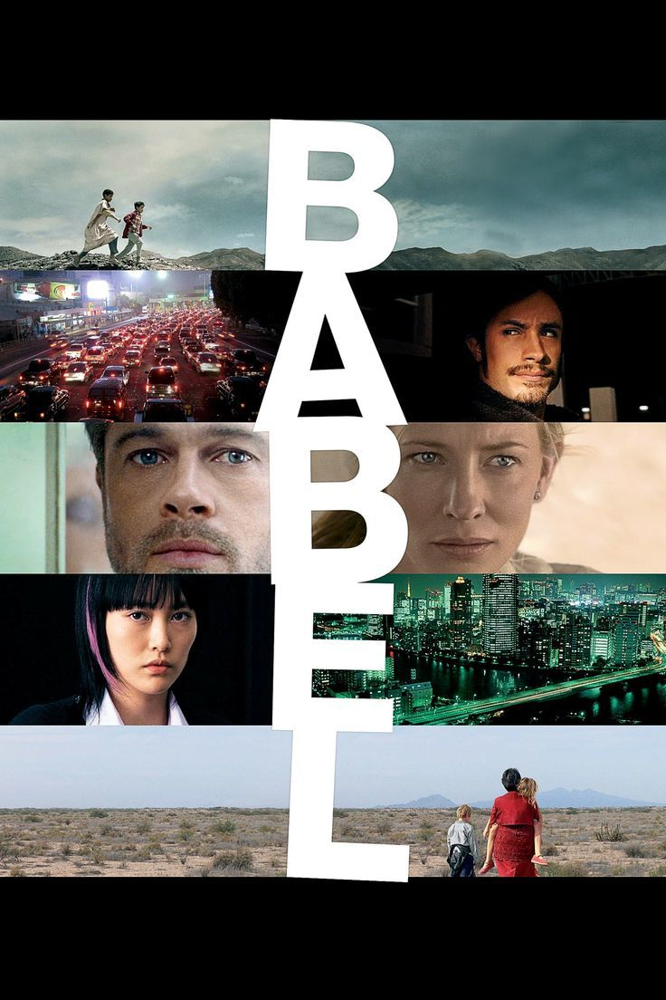
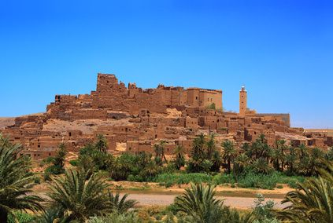
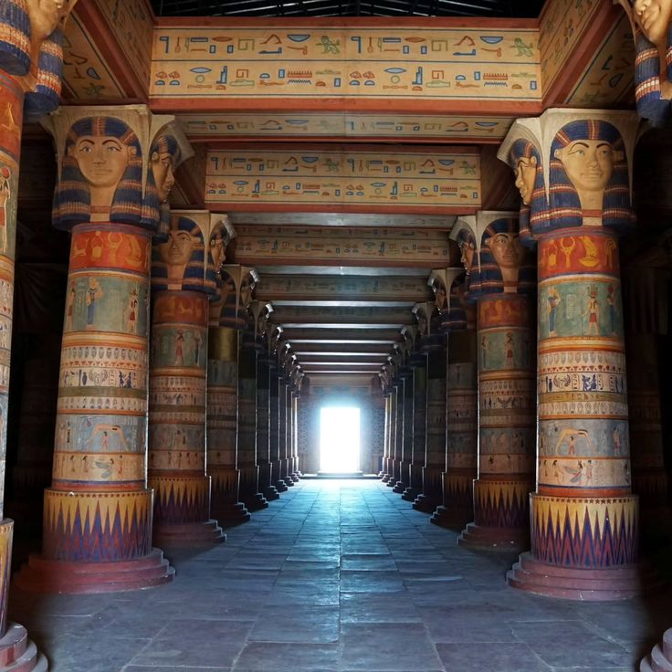
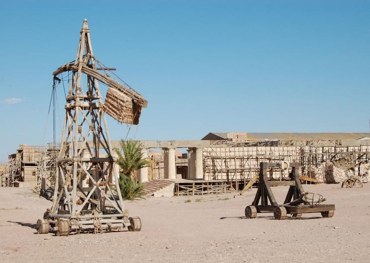

Movies & Series Filmed in Ouarzazate
Discover movies and series that were filmed in Ouarzazate.

Gladiator (2000)

Kingdom of Heaven (2005)

The Mummy (1999)

Prince of Persia: The Sands of Time (2010)

Babel (2006)

Vikings

Game of Thrones

Prison Break
Famous Filming Locations
Explore the locations used by international film productions.

Ait Ben Haddou

Kasbah Taourirt

Kasbah Tifoultoute

Fint Oasis
Film Studios

Atlas Studio

CLA studio

Cinema Museum
About Cinema in Ouarzazate
why Ouarzazate is known as an important filming destination.